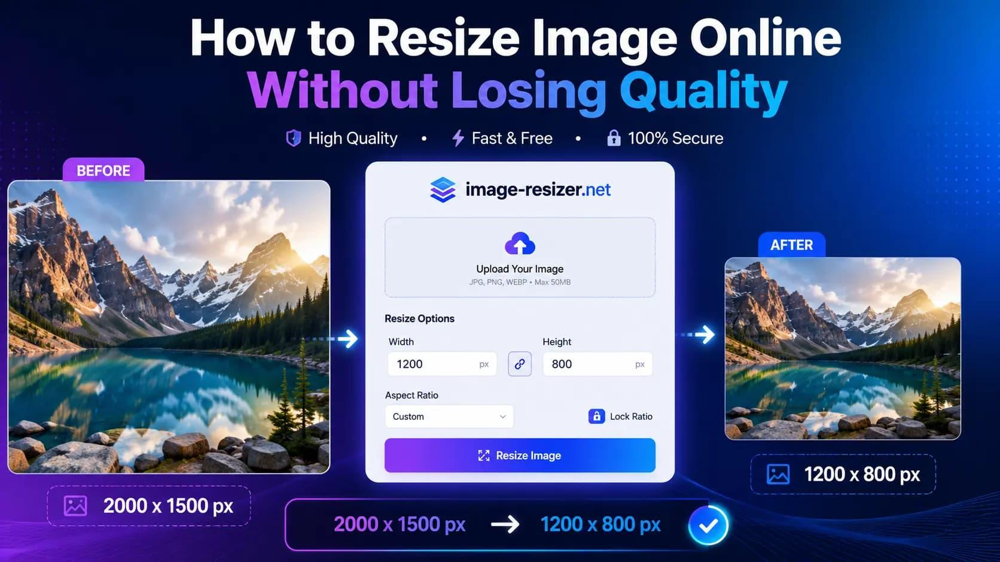
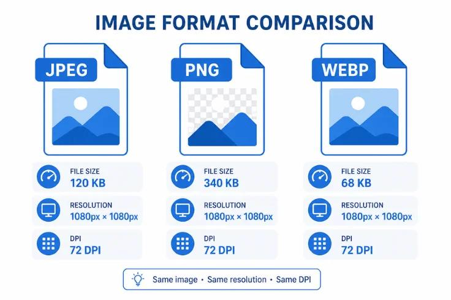

You upload a JPG image to an online compressor, select a compression setting, and download the result. But instead of getting a smaller file, you discover that the new image is actually larger than the original.
Why does this happen?
It seems strange because image compression is supposed to reduce file size. However, compressing a JPG does not guarantee that the resulting file will be smaller. The result depends on the original image, the quality setting, the compression method, and the way the new file is saved.
In this guide, you will learn why JPG files sometimes get bigger after compression, how to identify the cause, and which settings can help you create smaller images without unnecessarily sacrificing quality.
Quick Answer: Why Does Your JPG File Get Bigger?
The most common explanation is that your original JPG was already efficiently compressed, but the tool saved it again using a different or less efficient configuration.
Other possible reasons include:
- The output quality setting is higher than the original image's effective quality.
- The image was resized to larger dimensions.
- The new file includes additional metadata or a color profile.
- The output uses a different image format or encoding method.
- The tool is optimized for image quality rather than the smallest possible file.
JPEG uses lossy compression, meaning some image information is discarded to reduce file size. Saving a previously compressed image again does not automatically make it smaller.
1. Your Original JPG Is Already Compressed
This is one of the main reasons a JPG file may become larger after compression.
JPG images commonly use lossy compression. When an image is first saved, the encoder removes some information that is less noticeable to the human eye.
If the original image has already been optimized, a second compression process may have little additional data to remove. If the new encoder uses a less efficient setting, the resulting file can even become larger.
For example, imagine a photo that was originally exported with a carefully chosen compression setting. You upload it to another tool, which re-encodes it using a higher quality setting. The new image may preserve more of the information it receives, but that can require more bytes.
What to do: Try a lower output quality setting, or compare the new file with the original before downloading or replacing it. Keep the original if the compressed version is not smaller or looks worse.
2. The Quality Setting Is Too High
Many image compressors let you adjust image quality. A higher quality setting usually preserves more visual detail, while a lower setting generally reduces file size.
However, the quality number selected in one tool is not necessarily equivalent to the same number in another tool. Different encoders use different methods, so a quality setting of 90 in one application may produce a different result from 90 in another.
Here is a practical starting point for ordinary photographs. These are suggested test ranges, not guaranteed file-size results.
| Quality setting | What to expect | Best for |
|---|---|---|
| 90 to 100 | Usually larger files with more detail retained | High-quality photo exports |
| 75 to 89 | A useful balance to test between quality and size | Website photos and everyday sharing |
| 50 to 74 | Often smaller files, with more visible compression possible | Images with tighter size limits |
| Below 50 | Stronger compression may cause noticeable artifacts | Only when a very small file is necessary |
Important: These ranges are approximate. Test your actual image because the best setting depends on its content and the encoder.
3. The Image Dimensions Have Increased
Compression and resizing are two different operations.
- Compression changes how image information is stored.
- Resizing changes the image's width and height in pixels.
If your original image is 1200 × 800 pixels but the output is 2400 × 1600 pixels, the new image contains four times as many pixels. Even with compression, this increase can make the resulting file much larger.

Before compressing, check these details:
- Is the output width the same as the original?
- Is the output height unchanged?
- Did the tool automatically upscale the image?
- Are you exporting at a higher resolution than you need?
For website images, use dimensions appropriate for the actual display size. Avoid enlarging small images unless you have a specific reason.
4. The Compressor Adds Metadata
Image files can contain additional information beyond the visible picture. Depending on the file and software, this may include:
- Camera and capture information
- Date and time details
- GPS location information
- Color profiles
- Embedded thumbnails or other metadata
When a tool saves a new JPG, it may preserve, remove, or add some of this information. The extra data can affect the final file size.
Metadata is not always the main reason for a larger file, and removing it will not guarantee a smaller image. However, if privacy matters, check whether your tool provides an option to remove location or other unnecessary metadata.
What to do: If available, test an export with unnecessary metadata removed and compare the output size. Do not remove a color profile blindly if accurate color reproduction matters.
5. You Changed the Image Format
Sometimes, what appears to be a compression problem is actually a format-conversion problem.
Different image formats are designed for different types of content and compression methods.

| Format | Best use | What to watch for |
|---|---|---|
| JPG / JPEG | Photographs and realistic images | Does not support transparency |
| PNG | Screenshots, graphics, and transparency | Can be larger for photographs |
| WebP | Website images and many everyday image uses | Check compatibility with your workflow |
| AVIF | Images where efficient compression is important | Check the requirements of your target platforms |
PNG uses lossless compression, while JPG uses lossy compression. WebP supports both lossy and lossless compression, and its file size depends on the selected mode and settings.
For example, converting an already compressed JPG to PNG may produce a larger file. PNG may preserve the decoded image without additional lossy compression, but it does not necessarily store photographic content as compactly as JPG.
What to do: Choose a format according to the image's purpose. For ordinary photos, compare JPG with WebP if your website or workflow supports it. For graphics that require transparency, use a suitable format such as PNG or WebP.
You can use the QuickToolsPK Image Format Converter to test a different format.
6. The Compressor Uses a Different Encoding Method
Not all JPG encoders produce identical files. They can differ in how they process image data, apply optimization, and save the resulting file.
Two files can look nearly identical while having different sizes. Likewise, a new file can become larger even when it uses the same .jpg extension.
The filename extension alone does not tell you how efficiently the image was encoded.
What to do: Compare more than one quality setting or compression tool if necessary. Always compare the final file size and inspect the image visually.
How to Fix a JPG That Gets Bigger After Compression
Follow these steps in order.
Step 1: Check the original file size
Note the original size in KB or MB before uploading it.
Step 2: Reduce the quality setting gradually
Try a moderate setting first. Avoid choosing maximum quality if your goal is to minimize file size.
Step 3: Check image dimensions
Make sure the output is not larger in pixels than the original unless you need a larger image.
Step 4: Test another format if appropriate
Compare WebP or another suitable format when your destination supports it.
Step 5: Compare the result
Check file size, dimensions, and visual quality before replacing the original.
Before and After: How to Compare Your JPG Files
Use this table to record your own results. The example below is a blank test sheet, not a claim that a specific compressor achieved these results.
| Test | Original | Compressed result |
|---|---|---|
| File size | Record size | Record size |
| Width | Record pixels | Record pixels |
| Height | Record pixels | Record pixels |
| Image quality | Inspect original | Inspect result |
| Format | JPG | Confirm output |
To calculate the percentage change in file size, use:
A positive result means the file became larger. A negative result means it became smaller.
For example, if a file changes from 1 MB to 0.7 MB, its size has decreased by 30%. If it changes from 1 MB to 1.2 MB, it has increased by 20%.
Try QuickToolsPK's Image Compressor
If you want to reduce the size of a JPG for a website, email, online form, or social media upload, start with the QuickToolsPK Image Compressor.
For the best result:
- Upload the original image.
- Choose a moderate compression setting, if available.
- Download the result.
- Compare the file sizes.
- Inspect the image at its intended display size.
If the output is larger, try a different setting or format. You do not need to keep a compressed file that is bigger than the original.
Tip: Keep a copy of your original image. Repeatedly re-saving a JPG can introduce additional quality loss, so it is better to create new exports from the best available source.
Frequently Asked Questions
Can compressing a JPG increase its file size?
Does higher JPG quality mean a bigger file?
Should I compress a JPG more than once?
Why does converting JPG to PNG increase file size?
Is WebP better than JPG for websites?
How can I reduce a JPG without losing too much quality?
Conclusion
A JPG file getting bigger after compression does not necessarily mean your image is broken. It usually means the new saving process did not produce a more efficient file for that particular image.
Check the quality setting, image dimensions, output format, and metadata. Compare the resulting size with the original and keep the version that best balances file size and visual quality.
Ready to optimize your images? Try the QuickToolsPK Image Compressor and compare your results.